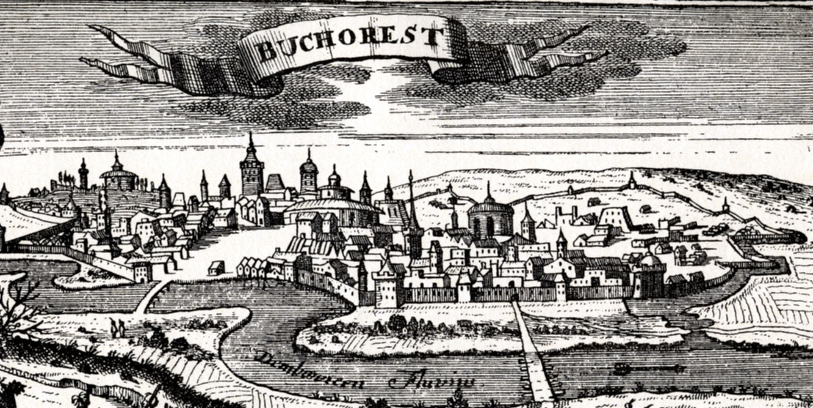

|
Istorie

Legenda spune că Bucureștiul a fost fondat de un oier pe nume Bucur. Conform altei variante mai probabile, București a fost întemeiat de către Mircea cel Bătrân la sfârșitul secolului al XIV-lea.
Pe malurile Dâmboviței și ale Colentinei este atestată cultura paleolitică și neolitică. Până în 1800 î. Hr. apar anumite dovezi ale unor comunități în zonele Dudești, Lacul Tei și Bucureștii Noi de astăzi. Săpăturile arheologice arată trecerea acestei zone printr-un proces de dezvoltare din epoca bronzului și până în anul 100 î. Hr., în timpul căruia zonele Herăstrău, Radu Vodă, Lacul Tei, Pantelimon, Dealul Mihai Vodă, Popești-Leordeni și Popești-Novaci sunt populate de indo-europeni (mai precis geto-daci). Primele locuințe după retragerea aureliană din 273 d. Hr. sunt atestate în secolele III–XIII, până în Evul Mediu.
Așezarea este atestată documentar la 21 septembrie 1459 într-un act emis de Vlad Țepeș, domn al Țării Românești, prin care se întărește o moșie unor boieri. Cetatea Dâmboviței, cum mai apare în primii ani orașul, avea rol strategic, urmând să supravegheze drumul ce mergea de la Târgșor la Giurgiu, în ultima așezare aflându-se o garnizoană otomană. În scurt timp, Bucureștiul se afirmă, fiind ales la 14 octombrie 1465 de către Radu cel Frumos ca reședință domnească. În anii 1558–1559, la Curtea Veche este construită Biserica Domnească, ctitorie a domnului Mircea Ciobanul, aceasta rămânând până astăzi cel mai vechi lăcaș de cult din oraș păstrat în forma sa inițială.
În 1659, sub domnia lui Gheorghe Ghica, Bucureștiul devine capitala Țării Românești, din ordin turcesc, pentru a avea o capitală în zona de câmpie și aproape de Dunăre, mai ușor de controlat în comparație cu Târgoviște. Din acel moment se și trece la modernizarea acestuia. Apar primele drumuri pavate cu piatră de râu (1661), se înființează prima instituție de învățământ superior, Academia Domnească (1694) și este construit Palatul Mogoșoaia (Constantin Brâncoveanu, 1702), edificiu în care astăzi se află Muzeul de Artă Feudală Brâncovenească. În 1704 ia ființă, la inițiativa spătarului Mihai Cantacuzino, Spitalul Colțea, care a fost avariat ulterior într-un incendiu și un cutremur și reconstruit în 1888.
|